1. 静止时的反弹颜色有多准？
Release93 在第 119 帧的地面与白色接收体上，平均间接亮度分别比独立参考低 3.075% 和 0.831%。比较量 D 为间接漫反射辐照度除以 π，取自滤波后、乘接收面反射率之前。
| 接收区域 | 已知点 / 源点 | 平均 D 亮度 | 参考 | 逐点亮度 MAE |
|---|
| 地面 | 13,328 / 13,330 | 0.069485 | 0.071689 | 0.010529 |
| 白色接收体 | 86 / 86 | 0.225072 | 0.226957 | 0.018576 |
 Release93，DXR，2 条射线，4 级空间滤波。差值图红色表示偏亮，蓝色表示偏暗，量程 0.05。棋盘为区域外，洋红为未知。
Release93，DXR，2 条射线，4 级空间滤波。差值图红色表示偏亮，蓝色表示偏暗，量程 0.05。棋盘为区域外，洋红为未知。
CPU 参考使用独立源几何，每点 256 个样本，最多 8 次反弹，黑环境，只计算漫反射和发光。图中标准误描述参考的逐像素采样噪声。弹射截断、射线偏移与产品的缓存和滤波也会影响差值。相比旧软件路径的 3 级滤波，这两个区域的 MAE 分别高约 10.1% 和 6.6%，同时发生了后端与版本变化。颜色数据与估计范围 ↗
逐灯间接倍率会改变相机看见的直射吗？
同一盏白点光、同一块白地板。两次独立启动的 Unity 中，倍率 0 和 1 的原生直射全图一致。间接光在倍率 0 时全图为零，倍率 1 时左侧地板偏红、右侧偏蓝，颜色来自视锥外的墙。
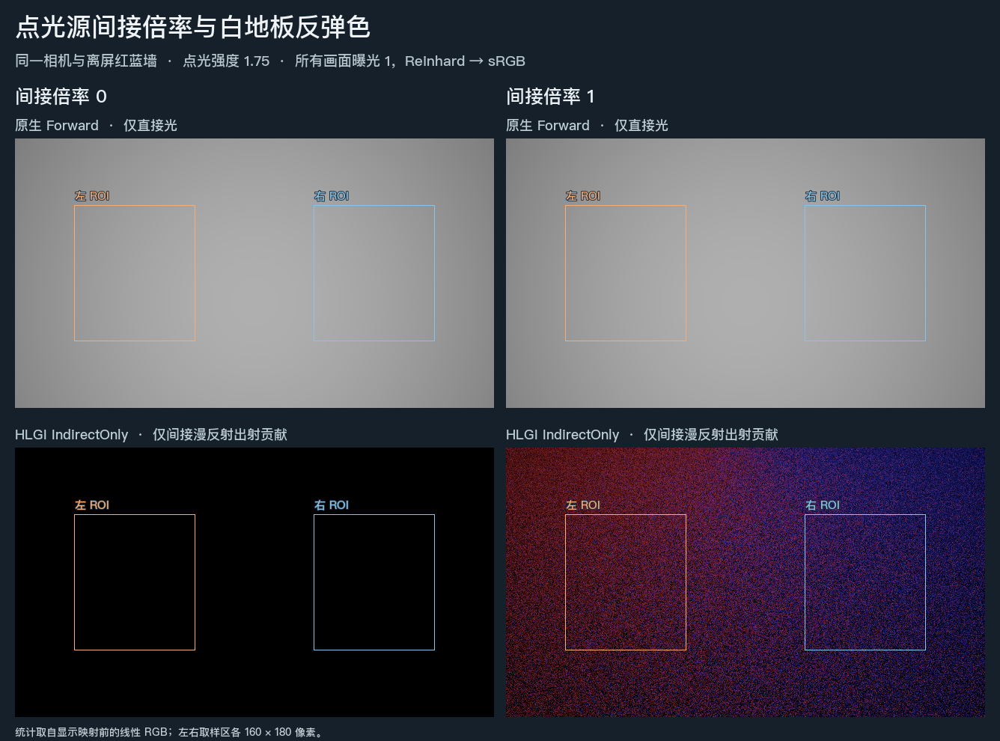
Release111 产品源码，固定机位实际 DXR。为单独观察一次反弹，采用全分辨率、8 条射线并关闭时间累积和空间滤波。图的颗粒不代表统一示例的默认画质。线性读数与灯表
原始 EXR 倍率 0 间接 · 倍率 1 间接 · 倍率 0 直射 · 倍率 1 直射
2. 墙换色或灯关闭后，还剩多少旧光？
关灯时暂时采不到新光。 Release112 修复了全局灯变化只记一帧的问题。像素连续两帧没有可信采样时可以继续显示原来的白色。首次得到可信黑色时，旧版的线性输出仍是 0.666667，修复后直接降至 0。此后正常累计。这是两像素控制输入的实际时间重建着色器读数；整景关灯画面与多跳残留见本节下方。连续帧与子像素读数
同版蓝墙对照。 Release109 中，红墙改蓝后第 30 帧，与从首帧就是蓝墙的对照相比，地板和白色接收块的平均间接亮度分别低 12.34% 和 11.59%。红色占比在地板低 2.53 个百分点，在白色接收块高 1.62 个百分点。该时点有亮度差，两处的色向变化不同。
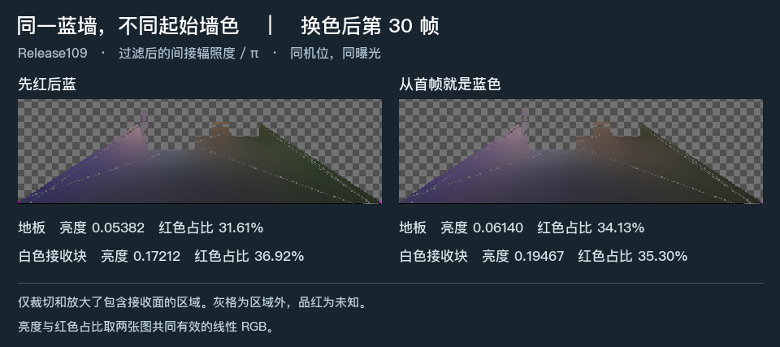
实际 DXR，640×360、半分辨率 GI，2 条射线、4 级滤波。两程仅比较相同机位与工作帧。少量未知点单列，精确收敛时间仍未知。采集与读数 · 两程线性数据与掩码
换色。 Release83 软件路径把红墙改蓝，地面和白色接收体都保持原材质。第 30 帧，两处反弹已明显转蓝。第 59 帧与第 119 帧的区域平均 RGB 归一化色向 L1 距离分别为 0.005536 和 0.001583。蓝墙状态缺少独立参考，绝对旧色份额仍未知。
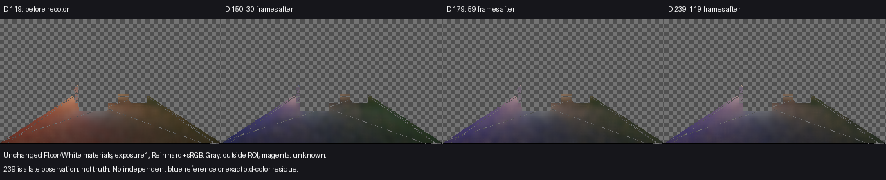
Release83，换色前和换色后 30、59、119 帧。比较相同已知点的 D。换色记录 ↗
关灯。 在 Release78 对应的修复中，相机上传的解析灯表清空后，缓存单独使用发光面和环境的份额。在这个事件中，关灯当帧到第 59 帧的逐像素出射亮度绝对变化均值从 0.006379 降到 0.000499，减少 92.18%。该数值衡量两张画面之间的变化。部分灯仍开启时的多跳残留及物理误差仍待确定。
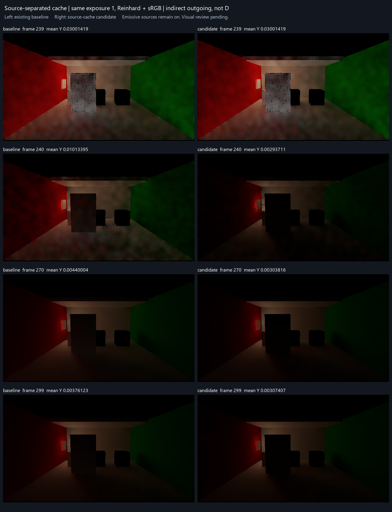
Release78 候选与原版本。发光面继续照亮房间，图中显示乘过接收材质的间接出射贡献。图内候选标签沿用采集时的名称，最终采用结论见关灯记录 ↗。
3. 运动颗粒减少后，门有没有留下拖影？
Release112 首次在这套 2 射线、4 级滤波、DXR 配置上连续完成规定路线。门移动并返回原位，五盏解析灯关闭、重新开启，随后切换薄壁和封闭房间。图为普通相机 Final，同一曝光。下方的间接光专项目视对照另用于判断颗粒和旧门轮廓。
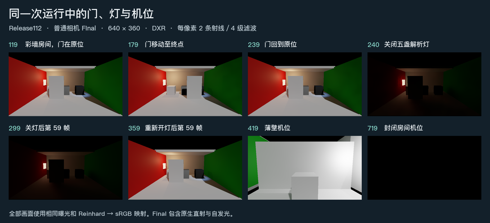
640×360，半分辨率 GI。关灯后左侧发光面仍可见。全程功能记录及各时点的普通画面不能给出纯拖影量或精确收敛时间。路线与帧记录
在门运动中、刚到终点和停后 10、30 帧，4 级滤波使门面、地板和绿墙上的云斑减弱。门和墙地交界仍可辨认，同平面的明暗过渡更柔。四个观测点均未见明显新增的持续旧门轮廓。观测点之间的运动和其他速度仍有不确定性。
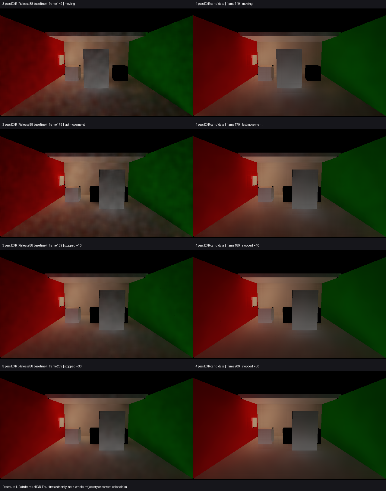
左为已有 Release88 的 DXR／3 级滤波，右为 Release92 采用的 DXR／4 级滤波。两侧均为 2 条射线，第 149、179、189、209 帧，同曝光的间接出射贡献。运动图来源 ↗
4. 重新开灯后，多久恢复？
Release83 软件路径恢复五盏选定灯后，第 30 帧地面和白色接收体只恢复到各自此前亮灯观测值的 74.65% 和 65.68%。到第 59 帧，两者分别达到 98.36% 和 96.78%。此时与独立亮灯参考相比，平均 D 亮度仍分别低 7.39% 和 6.48%。
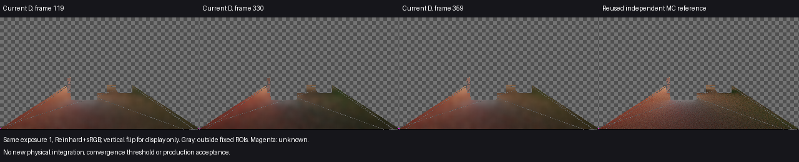
Release83，逻辑帧 119 为此前亮灯观测，300 重新开灯，330 和 359 为恢复后的采样点。相机、门位姿、灯状态和比较区域在三张亮灯观测中匹配。恢复数据与参考 ↗
可报告的是上述已采样帧的恢复程度。稀疏观测无法给出首次稳定帧、实测秒数或整景达到正确颜色的时间。
5. 白色平面能反射多少光，黑色与金属表面又会增加多少漫反射？
均匀白环境。 Release99 的无遮挡平面使用单位漫反射率、AO 和强度，环境入射辐亮度 RGB 均为 1，理论间接出射 RGB 因此也均为 1。真实相机中央 64×64 像素的三个通道均值都为 0.99902347，相对偏差为 −0.09765%。每个样点的 R、G、B 相等。该单帧观测覆盖这个平面的出射贡献，偏差产生的具体阶段仍未知。
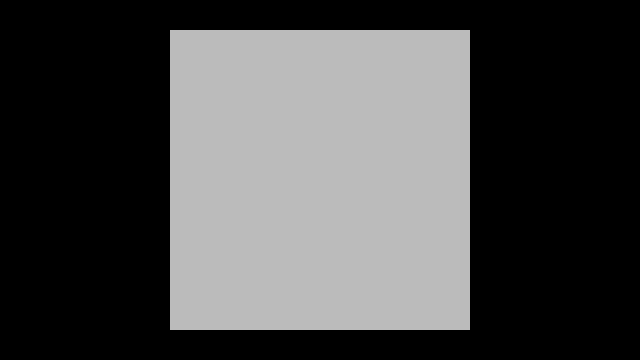
Release99，软件追踪。预览采用 Reinhard 与 sRGB 显示映射，统计取自映射前的浮点像素。保存原始线性 EXR 输入与数值 ↗
零漫反射材质。 历史 V209 第 119 帧的普通加法合成中，全金属接收面的 298 个内部采样点和黑色接收面的 473 个内部采样点，合成前后线性 RGB 逐点相同。全部金属样点和 446 个黑色样点原本已有非零颜色，这部分颜色完整保留。这里观察的是净增量，直接光与镜面分量合并在原生相机颜色中。
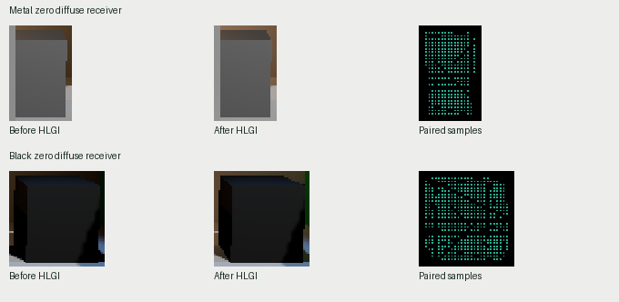
V209，第 119 帧，左为合成前，中为合成后，右为按源几何选出的内部采样点。同帧对照与边界 ↗
6. 看不见的表面能否影响眼前的地板？
近处的解析遮板能否截住更远的 DXR 色墙？
地板与暖色墙使用精确硬件网格；绿色遮板只有 BoxCollider 和 GI Proxy。在同一机位把遮板移入光路，27 个固定白地板采样点的平均间接 RGB 从 (0.11553, 0.05776, 0.02888) 变为 (0, 0.30093, 0)。遮板没有可供普通相机绘制的网格，屏幕射线也已关闭。
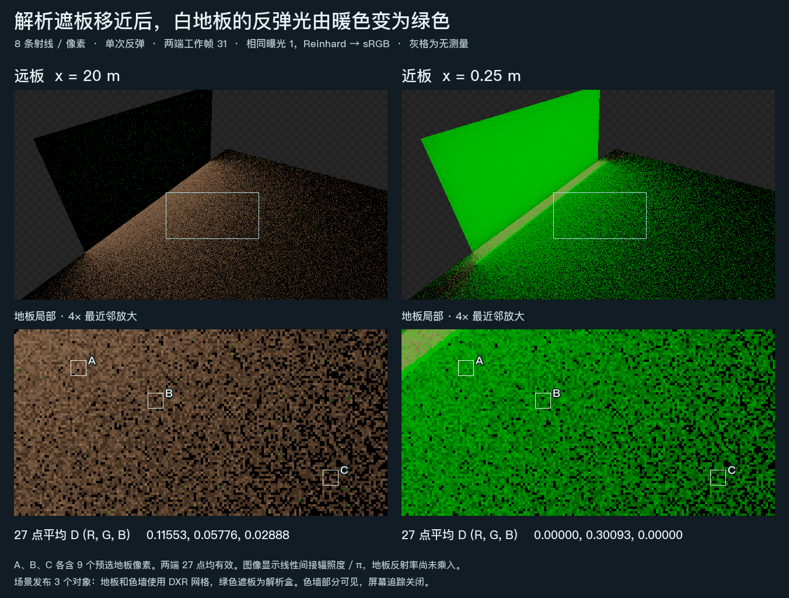
两程各为 2 个硬件网格、1 个解析回退，均取 GI 工作帧 31。数值是乘接收面反射率之前的间接漫反射辐照度除以 π。线性读数、采样点和几何条件
在有限色墙场景中，墙完全位于视锥外。只交换墙纹理两种颜色的位置，白地板左右两区的平均 R−B 均反转。此图采用 8 条射线、一次反弹，关闭时域与空间滤波。离屏纹理原始 EXR 对
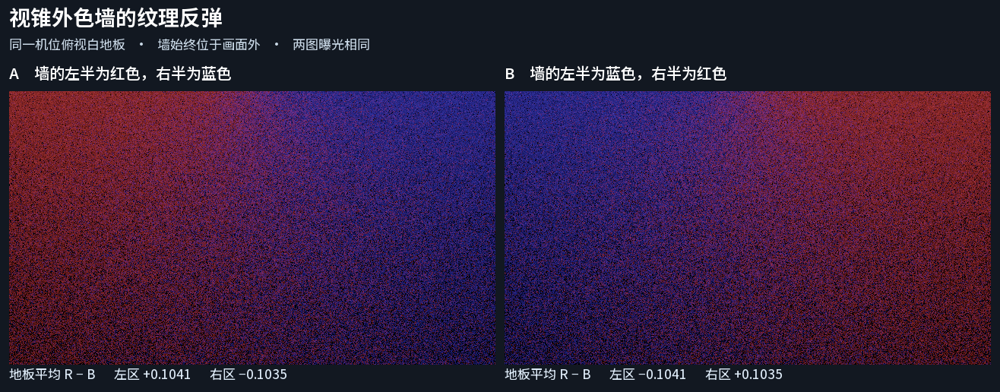
同一相机只看地板。两张纹理各有一半红色和一半蓝色。
Release102 的相邻两室共用一个门洞。关闭全部解析灯后，同一前室地板区域的平均线性亮度在开门时为 0.11809，全闭时为 0.00000530。两图分别来自固定门姿的第 119 帧，使用 2 条射线和 4 级滤波。开关门原始 EXR 对
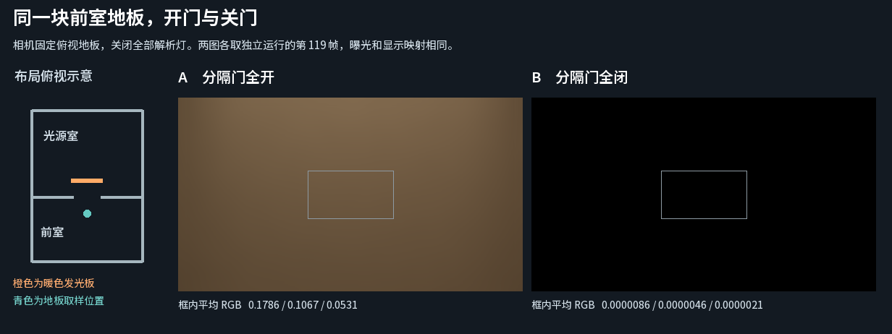
相机始终看同一接收面。两次独立运行支持这处门洞的遮挡结论；关门后的衰减时间尚未由这对画面测量。
同一次关门后，首个闭门帧的前室地板仍保留开闭亮度差的 47.45%。第 +59 帧降至 9.38%，第 +119 帧（该次 Editor 采集约 1.42 秒）仍有 6.34%，精确收敛时间未知。
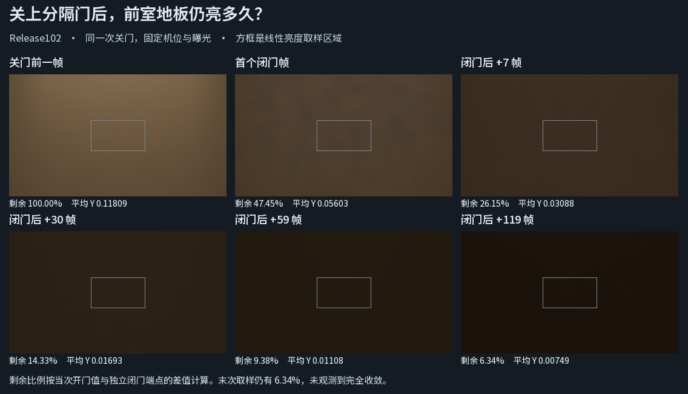
Release102。门已闭合，解析灯为零，亮度变化来自暖色发光面间接照明的响应。同一过程的逐点读数 ↗
把相机移到左门框后方，地板接收区到两块暖色发光面的直线都穿过左隔墙。开门时这块地板平均间接亮度为 0.01979983，闭门时为 0.00007467。两次独立运行均取固定门姿的第 119 帧。受遮地板原始 EXR 对
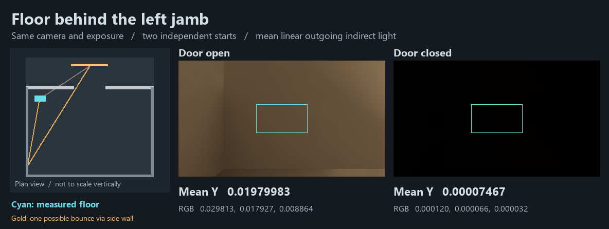
青框为地板接收区，金线为一条可行反弹光路。图像没有分解各墙面的贡献。机位与遮挡范围 ↗
三室中穿过错位开口后，中央门如何显露？
在 Release105 中按 F3、F4。沿右侧开口进入中室，向左对准中央门，再进入源室。普通 Player 的实际路线通过了两道门洞；同一布局 Far 发布完整聚合体，返回 Near 后恢复全部三个细节成员。
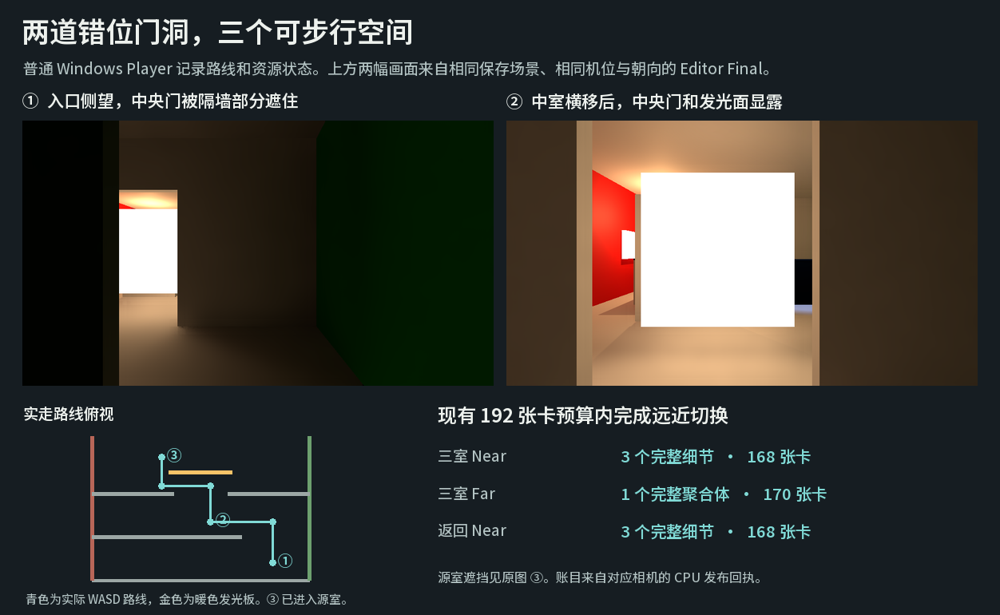
机位和资源状态来自普通 Windows Player。图像为同一保存场景按实际机位重现的 Editor Final。入口原图 · 中央门原图 · 源室末点原图
7. 替换烘焙漫反射时，真实直射灯还能保留吗？
两块普通 Forward Lit 地面读取同一张非方向光照贴图的不同区域。关闭烘焙用灯，运行时加入绿色直射灯。在 HLGI 间接强度为零时启用替换，两侧都只保留了直射。与解绑贴图且关闭 HLGI 的独立画面相比，两处内部区域的最大线性通道差为 5.96 × 10⁻⁸。
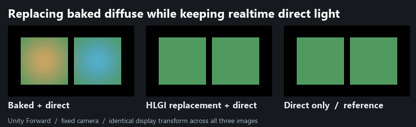
Unity 6000.0.85f1，URP 17.0.4，静态非方向贴图。烘焙加直射 EXR · 替换 EXR · 仅直射 EXR · 条件与读数 ↗
在另一张真实方向贴图上，同一接收面法线由向左倾改为向右倾时，暖、冷两处都出现可辨的亮度变化。对向右倾的法线启用替换，两个内部区域与独立实时直射的最大通道差为 0.000488，处于原生漫反射中间纹理的一个 FP16 间隔以内。
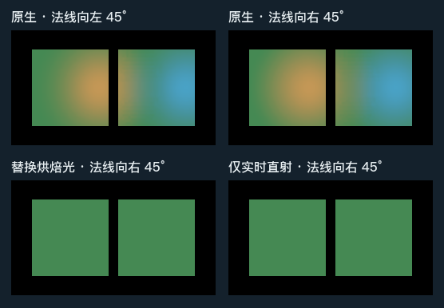
Release106 源码，固定俯视相机，方向贴图的 UV 与位置保持一致。原生左倾 EXR · 原生右倾 EXR · 替换 EXR · 仅直射 EXR
Mixed 主灯与 Shadowmask。 在同一静态接收面上，将 baked color 换为黑色、保留原遮罩，得到独立的原生直射。Replace 后受遮区和受光区的平均线性亮度分别为 0 和 0.488486，两个内部区域均与该直射基准逐像素相符。仅将遮罩换白后，原受遮区也达到 0.488486。
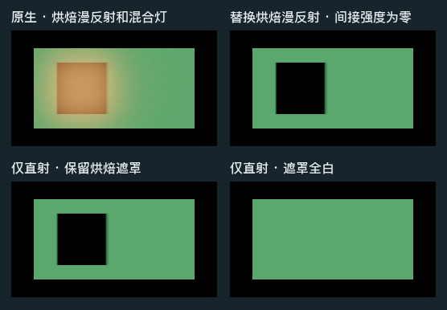
普通 Forward Lit、通道 0。烘焙板在四帧采集前均已禁用。原生 EXR · 替换 EXR · 遮罩直射 EXR · 全白遮罩 EXR